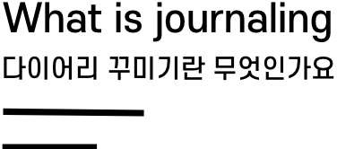

내가 책을 쓰거나 신문기사를 쓸 수는 없더라도, 언제라도 나 자신을 위한 글은 쓸 수 있다.
안네 프랑크의 일기 속 명언

다이어리 꾸미기는 단순히 일상을 기록하고 꾸미는 것을 넘어
자신의 취향, 정체성, 관심사 모두를 표현할 수 있는 나만의 책을
만들어가는 과정이라고 할 수 있습니다. 경제적으로 부담이 되지
않는 선에서 스티커등을 사서 붙이고, 소소하게 나의 일상을 쓰고
자신의 취향대로 꾸미고 만족을 할 수 있는 건강한 취미활동입니다.
요즘은 20대에겐 또다른 '나의 개성을 표현할 수 있는 수단'으로
받아들여져 유행하고 있기도 합니다.
자신의 취향, 정체성, 관심사 모두를 표현할 수 있는 나만의 책을
만들어가는 과정이라고 할 수 있습니다. 경제적으로 부담이 되지
않는 선에서 스티커등을 사서 붙이고, 소소하게 나의 일상을 쓰고
자신의 취향대로 꾸미고 만족을 할 수 있는 건강한 취미활동입니다.
요즘은 20대에겐 또다른 '나의 개성을 표현할 수 있는 수단'으로
받아들여져 유행하고 있기도 합니다.